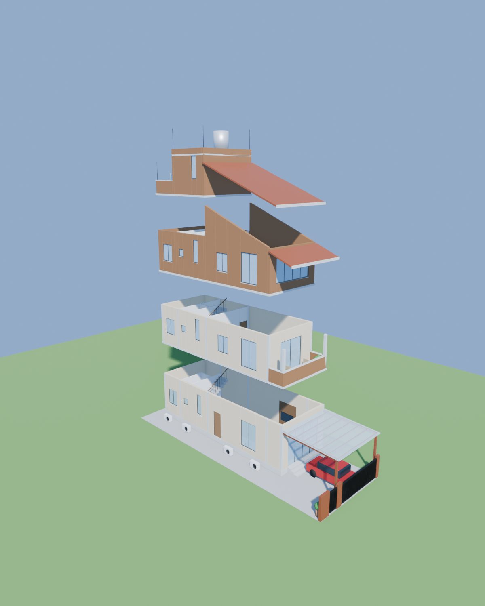
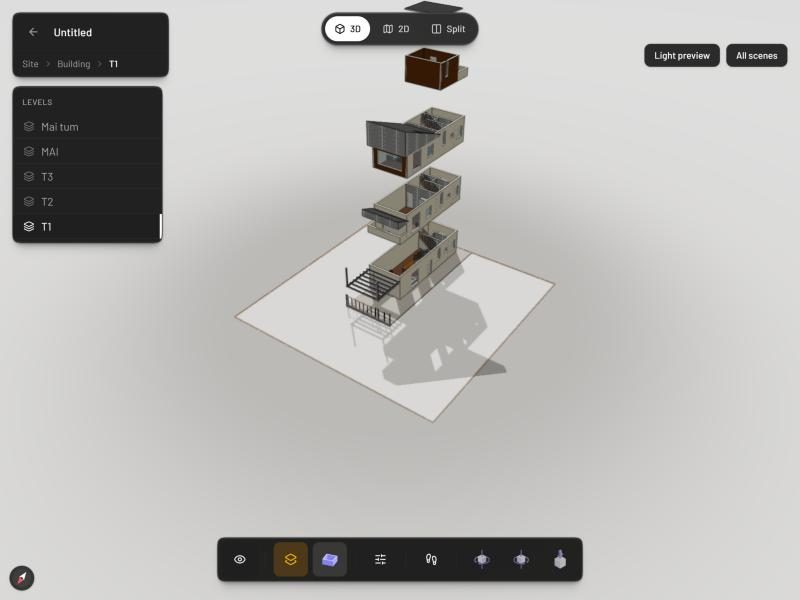
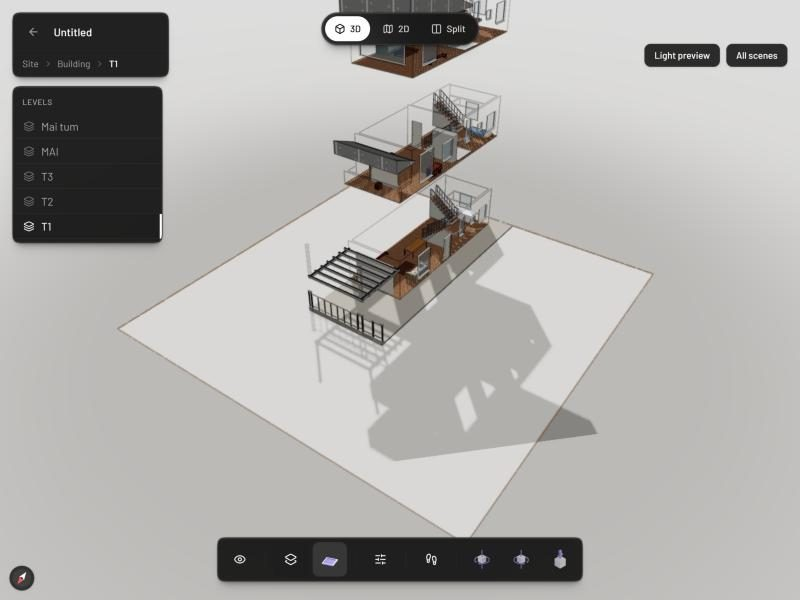
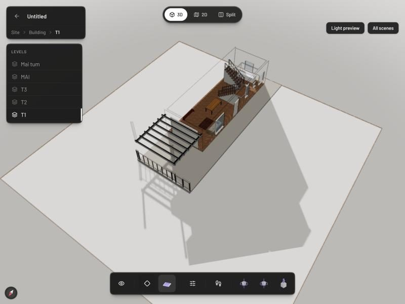
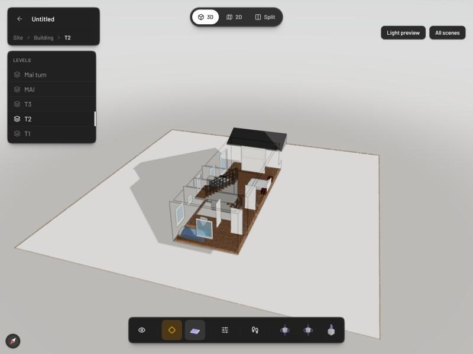
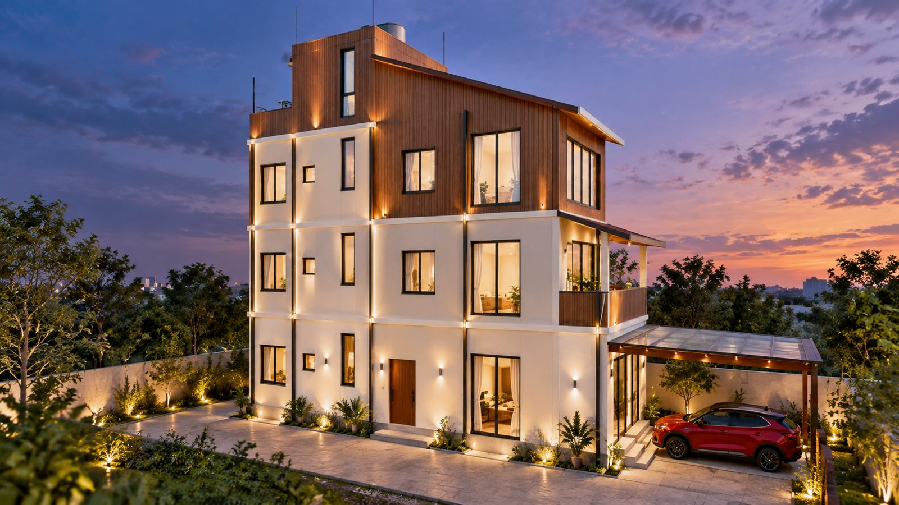

Buổi 06 · Đồ án cuối khóa
Khóa đào tạo thực chiến: AI Agent trong Kỹ thuật & Xây dựng
Ráp trọn quy trình hồ sơ nhà phố
Từ ý tưởng của chủ nhà đến bộ hồ sơ gửi khách: 7 chặng, 3 cổng duyệt
"AI làm nhanh. Người chịu trách nhiệm ký."
CES Global · aec.cesglobal.com.vn
Sáu việc làm được sau buổi cuối
- Nhìn quy trình như dây chuyền 7 chặng, mỗi chặng có file vào, file ra.
- Chạy trọn 7 chặng trên căn nhà của chính mình.
- Đặt 3 cổng duyệt người ở chỗ sai thì đắt; AI không tự gửi gì.
- Xử lý chủ nhà đổi ý: sửa bản vẽ, phát hành lần 2.
- Đóng gói quy trình thành skill cho công trình sau.
- Biết thêm Pascal Editor và khi nào dùng cùng Blender.
Lộ trình 150 phút
Hơn một nửa buổi là học viên tự chạy trên căn nhà của mình.
Năm buổi, một dây chuyền 7 chặng
Mỗi chặng đọc file của chặng trước và ghi file cho chặng sau.
Đầu vào
Ảnh, yêu cầu chủ nhà
Thông số
/plan
Bản vẽ
AutoCAD, Buổi 03, 04
Mô hình
Blender, Buổi 04
Phối cảnh AI
Buổi 05
Khối lượng
BOQ, Buổi 05
Hồ sơ khách
PDF gộp, thư nháp
CỔNG 1
CỔNG 2
CỔNG 3
Đầu vào, đầu ra và người duyệt
| Chặng | Đầu ra (file) | Công cụ | Ai duyệt |
|---|---|---|---|
| 1. Đầu vào | 01-ho-so-dau-vao/*.md, 00-thong-tin-cong-trinh.md | MarkItDown, đọc ảnh | |
| 2. Thông số | 02-thong-so/01_phieu-thong-so.md | /plan | Cổng 1: kỹ sư chủ trì |
| 3. Bản vẽ | DWG, DXF, PDF A3 | MCP AutoCAD, script Buổi 04 | Cổng 2: kỹ sư chủ trì |
| 4. Mô hình | File mô tả JSON, .blend, ảnh | vn-blender | Số cửa khớp bảng |
| 5. Phối cảnh AI | 2 đến 3 ảnh + bảng so sánh | render-phong-cach | Giữ đúng kiến trúc |
| 6. Khối lượng | BOQ Excel + tóm tắt | boc-khoi-luong, kiem-tra | Agent kiểm tra |
| 7. Hồ sơ khách | 06-phat-hanh/yymmdd_lan-N/ | Python ghép PDF | Cổng 3: kỹ sư gửi |
01
Ba nguyên tắc ráp dây chuyền
File, cổng duyệt, bản vẽ là nguồn
Nguyên tắc 1
Bàn giao bằng file, không bằng trí nhớ.
Subagent không thấy cuộc trò chuyện, nhưng đọc được file. Hôm sau mở phiên mới vẫn làm tiếp được.
Nguyên tắc 2: cổng duyệt đặt ở chỗ sai thì đắt
1
Chốt thông số
Sai ở đây thì vẽ lại cả bộ.
DUYỆT2
Duyệt bản vẽ
Sai bản vẽ thì mô hình, ảnh, khối lượng sai theo.
DUYỆT3
Trước khi gửi khách
Gửi nhầm thì không lấy lại được. AI dừng, không tự gửi.
DUYỆTCác chặng còn lại để agent tự kiểm chéo.
Nguyên tắc 3: bản vẽ là nguồn
Chủ nhà đổi ý: sửa bản vẽ, chạy lại chặng 4 đến 7. Không sửa tay mô hình, ảnh hay Excel.
Một căn nhà, một thư mục chuẩn
CLAUDE.md dự án ghi quy trình và chữ "DỪNG, chờ tôi duyệt" ở 3 cổng.
Thư mục phát hành là hồ sơ đã gửi: không sửa, không xóa.
Lần gửi sau tạo lan-2, lan-1 giữ nguyên để đối chiếu.
02
Thị phạm 7 chặng trong 25 phút
Dừng ở từng cổng duyệt
25 phút chia thế nào
Chặng chạy lâu thì mở sẵn kết quả chạy thử tối hôm trước để không mất nhịp.
Cổng 1: /plan dừng chờ người duyệt
Phiếu thông số đã lập.
Các thông số đánh dấu (đề xuất) cần anh duyệt.
Duyệt kế hoạch? Có / Sửa tiếp
- Đọc phiếu
- Sửa ít nhất 1 thông số
- Rồi mới duyệt
Sửa trên giấy rẻ hơn sửa trên 4 tờ đã vẽ.
Câu trả lời trong khung là ví dụ minh họa.
Chặng 7: /goal kiểm hồ sơ đủ chưa
Lượt 1: thiếu ghi chú ảnh AI ở 2 trang
Chấm: chưa đạt
Lượt 2: thêm ghi chú, đếm lại trang
Chấm: đạt, goal tự tắt
- Một mô hình khác chấm sau mỗi lượt
- Điều kiện phải đo được
- Không tự cấp quyền, không tự gửi
Hồ sơ đủ thì AI dừng ở cổng 3, chờ anh chị tự gửi cho chủ nhà.
Diễn biến các lượt là minh họa. Nguồn: code.claude.com/docs/en/goal, tra 10/10/2026
03
Biết thêm: Pascal Editor
Dựng mô hình nhẹ trên trình duyệt, AI điều khiển qua MCP

Đã chạy thử 10/10/2026
Pascal dựng lại nhà 7x20m từ chính file bản vẽ
- Mã nguồn mở MIT, bản 1.0.3, chạy trên trình duyệt
- 27 tường, 30 cửa khớp bảng thống kê, 3 thang, 3 mái
- Sân, rào, cổng, nhà xe pergola
Ảnh chụp màn hình Pascal Editor, repo pascalorg/editor
Bấm một nút: cắt tầng, bung tầng




Pascal và Blender: mỗi công cụ một việc
| Pascal Editor | Blender (Buổi 04, 05) | |
|---|---|---|
| Cài đặt | Một lệnh npm, chạy trên trình duyệt | Blender, addon, kết nối, MCP |
| Cách dựng | Theo tường, cửa, sàn, thang, mái | Khối hình học, script tự cắt cửa |
| Xem cho kỹ sư | Cắt tầng, bung tầng, 2D sẵn | Mỗi kiểu xem viết script |
| Xuất IFC | Có trong giao diện web | Không có sẵn |
| Ảnh gửi khách | Màu trơn, 23 món đồ | Vật liệu, ánh sáng thật |
| Cốt sân | Mặt đất cố định ở cốt 0 | Đúng cốt -0,45 m |
Chạy thử 10/10/2026; README pascalorg/editor. Nút xuất IFC chưa thử trên lớp.
Câu chốt
Pascal để xem nhanh, đưa sang BIM. Blender để làm ảnh gửi khách.
Bản vẽ AutoCAD vẫn là nguồn của cả hai. Học viên tự cài ở nhà theo Prompt P.1, P.2.
04
Đồ án Lab 06
7 chặng trên căn nhà của chính anh chị
55 phút, phát hành lần 1
Tình huống: chủ nhà đổi ý
Cửa sổ phòng ngủ tầng 2 cao thêm 200 mm
Sửa bản vẽ, chạy lại chặng 4 đến 7, phát hành lan-2.
Thêm 1 cửa sổ hông tầng 3
Sửa bản vẽ, so khối lượng lần 1 và lần 2.
Thêm lam gỗ mặt tiền như ảnh AI, tính khối lượng
Lam chỉ có trên ảnh AI, chưa có trên bản vẽ.
Đúng: dừng lại, đề xuất bổ sung bản vẽ chi tiết lam trước rồi mới bóc.
Nghiệm thu D6 (thang 100)
Ba câu mang về sau khóa học
Bản vẽ là nguồn.
Mô hình, ảnh, khối lượng đều đọc lại từ bản vẽ.
Người duyệt ở chỗ đắt tiền.
AI làm nhanh, người chịu trách nhiệm ký.
Không bịa số.
Thiếu ghi [Chờ bổ sung], mâu thuẫn thì báo, đơn giá có nguồn.
Hồ sơ trong khóa là bản triển khai theo cấu tạo để học. Xin phép, thi công phải có kỹ sư, kiến trúc sư có chứng chỉ phù hợp kiểm tra và ký.

Cảm ơn anh chị
Từ một tấm ảnh của chủ nhà đến bộ hồ sơ gửi khách.
CES Global · Khóa AI Agent trong Kỹ thuật & Xây dựng · aec.cesglobal.com.vn